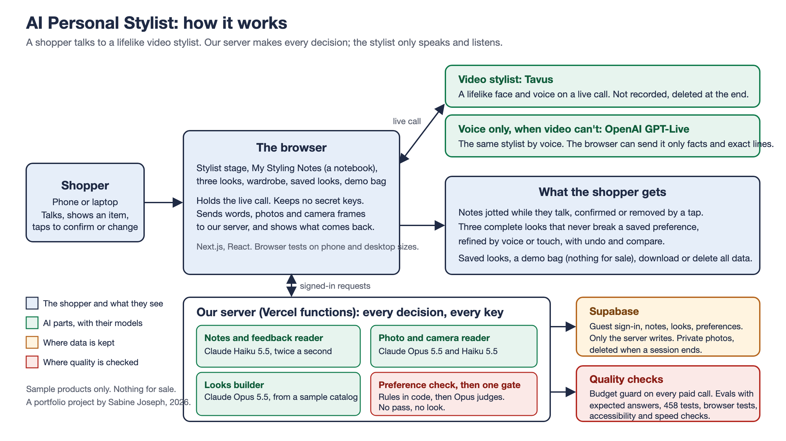

For anyone dressing for an occasion on their phone. A working web app, built in three weeks by an AI product manager directing Claude Code, with quality defined before it was measured.
Online shopping gives you a search box and a thousand results that don't go together. A good stylist listens, remembers, looks at what you own, and builds a whole outfit within your budget and rules. AI chat listens, then forgets your budget and shows you the heels you ruled out.

Targets set on 17 to 21 October 2026, before any result, and never moved.
| Measure | Target | Result |
|---|---|---|
| Notes within 2 s / right (63 sentences, in-sample) | 95% / 90% | 97% / 96% |
| Notes within 2 s / right (15 blind sentences) | 95% / 90% | 85% / 83%, not met |
| Rule breaks caught by code (37 looks) | All | 16 of 16 |
| Judged looks right | 90% | 21 of 21 |
| Photo details right (24 catalog photos) | 85% | 93% |
| AI cost per demo | About $1.10 | $1.15, not met |
| Phone speed, live welcome screen | 90 | 98 |